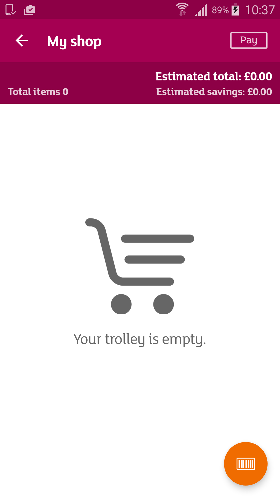
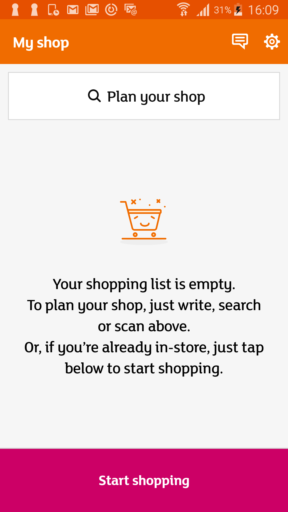

Test duration: 711.631s
| Failed Tests | ||
|---|---|---|
| com.smartshop.appiumtests.Appium_Tests.tests.TestPayfromCreatelist | ||
| payfromcreatelist | 103.916s |
Command duration or timeout: 60.27 seconds For documentation on this error, please visit: http://seleniumhq.org/exceptions/no_such_element.html Build info: version: '2.53.0', revision: '35ae25b1534ae328c771e0856c93e187490ca824', time: '2016-03-15 10:43:46' System info: host: 'holbmac0323', ip: '10.152.250.155', os.name: 'Mac OS X', os.arch: 'x86_64', os.version: '10.11.5', java.version: '1.8.0_91' Driver info: io.appium.java_client.android.AndroidDriver Capabilities [{app=/Users/ramana.sadaneni/Downloads/smart_shop_mobile_QA_1.2.1_RC1.apk, appPackage=com.sainsburys.ssa.qa, networkConnectionEnabled=true, warnings={}, databaseEnabled=false, deviceName=8ee1c3c2, platform=LINUX, deviceUDID=8ee1c3c2, appActivity=com.sainsburys.ssa.activities.LauncherActivity, desired={app=/Users/ramana.sadaneni/Downloads/smart_shop_mobile_QA_1.2.1_RC1.apk, appPackage=com.sainsburys.ssa.qa, appActivity=com.sainsburys.ssa.activities.LauncherActivity, platformName=Android, deviceName=Android Device}, platformVersion=6.0.1, webStorageEnabled=false, locationContextEnabled=false, takesScreenshot=true, javascriptEnabled=true, platformName=Android}] Session ID: fbc17ceb-1dfb-4a78-80a3-e6c69ef2390f *** Element info: {Using=id, value=titles_create_list}
sun.reflect.NativeConstructorAccessorImpl.newInstance0(Native Method)
sun.reflect.NativeConstructorAccessorImpl.newInstance(NativeConstructorAccessorImpl.java:62) sun.reflect.DelegatingConstructorAccessorImpl.newInstance(DelegatingConstructorAccessorImpl.java:45) java.lang.reflect.Constructor.newInstance(Constructor.java:423) org.openqa.selenium.remote.ErrorHandler.createThrowable(ErrorHandler.java:206) org.openqa.selenium.remote.ErrorHandler.throwIfResponseFailed(ErrorHandler.java:158) org.openqa.selenium.remote.RemoteWebDriver.execute(RemoteWebDriver.java:678) io.appium.java_client.DefaultGenericMobileDriver.execute(DefaultGenericMobileDriver.java:43) io.appium.java_client.AppiumDriver.execute(AppiumDriver.java:1) io.appium.java_client.android.AndroidDriver.execute(AndroidDriver.java:1) org.openqa.selenium.remote.RemoteWebDriver.findElement(RemoteWebDriver.java:363) org.openqa.selenium.remote.RemoteWebDriver.findElementById(RemoteWebDriver.java:413) io.appium.java_client.DefaultGenericMobileDriver.findElementById(DefaultGenericMobileDriver.java:59) io.appium.java_client.AppiumDriver.findElementById(AppiumDriver.java:1) io.appium.java_client.android.AndroidDriver.findElementById(AndroidDriver.java:1) com.smartshop.appiumtests.Appium_Tests.tests.TestBase.createlist(TestBase.java:162) com.smartshop.appiumtests.Appium_Tests.tests.TestPayfromCreatelist.payfromcreatelist(TestPayfromCreatelist.java:21) sun.reflect.NativeMethodAccessorImpl.invoke0(Native Method) sun.reflect.NativeMethodAccessorImpl.invoke(NativeMethodAccessorImpl.java:62) sun.reflect.DelegatingMethodAccessorImpl.invoke(DelegatingMethodAccessorImpl.java:43) java.lang.reflect.Method.invoke(Method.java:498) org.testng.internal.MethodInvocationHelper.invokeMethod(MethodInvocationHelper.java:86) org.testng.internal.Invoker.invokeMethod(Invoker.java:643) org.testng.internal.Invoker.invokeTestMethod(Invoker.java:820) org.testng.internal.Invoker.invokeTestMethods(Invoker.java:1128) org.testng.internal.TestMethodWorker.invokeTestMethods(TestMethodWorker.java:129) org.testng.internal.TestMethodWorker.run(TestMethodWorker.java:112) org.testng.TestRunner.privateRun(TestRunner.java:782) org.testng.TestRunner.run(TestRunner.java:632) org.testng.SuiteRunner.runTest(SuiteRunner.java:366) org.testng.SuiteRunner.runSequentially(SuiteRunner.java:361) org.testng.SuiteRunner.privateRun(SuiteRunner.java:319) org.testng.SuiteRunner.run(SuiteRunner.java:268) org.testng.SuiteRunnerWorker.runSuite(SuiteRunnerWorker.java:52) org.testng.SuiteRunnerWorker.run(SuiteRunnerWorker.java:86) org.testng.TestNG.runSuitesSequentially(TestNG.java:1244) org.testng.TestNG.runSuitesLocally(TestNG.java:1169) org.testng.TestNG.run(TestNG.java:1064) org.testng.remote.AbstractRemoteTestNG.run(AbstractRemoteTestNG.java:126) org.testng.remote.RemoteTestNG.initAndRun(RemoteTestNG.java:152) org.testng.remote.RemoteTestNG.main(RemoteTestNG.java:57) |
| com.smartshop.appiumtests.Appium_Tests.tests.TestProductLocation | ||
| testProductLocation | 98.651s |
Command duration or timeout: 60.19 seconds For documentation on this error, please visit: http://seleniumhq.org/exceptions/no_such_element.html Build info: version: '2.53.0', revision: '35ae25b1534ae328c771e0856c93e187490ca824', time: '2016-03-15 10:43:46' System info: host: 'holbmac0323', ip: '10.152.250.155', os.name: 'Mac OS X', os.arch: 'x86_64', os.version: '10.11.5', java.version: '1.8.0_91' Driver info: io.appium.java_client.android.AndroidDriver Capabilities [{app=/Users/ramana.sadaneni/Downloads/smart_shop_mobile_QA_1.2.1_RC1.apk, appPackage=com.sainsburys.ssa.qa, networkConnectionEnabled=true, warnings={}, databaseEnabled=false, deviceName=8ee1c3c2, platform=LINUX, deviceUDID=8ee1c3c2, appActivity=com.sainsburys.ssa.activities.LauncherActivity, desired={app=/Users/ramana.sadaneni/Downloads/smart_shop_mobile_QA_1.2.1_RC1.apk, appPackage=com.sainsburys.ssa.qa, appActivity=com.sainsburys.ssa.activities.LauncherActivity, platformName=Android, deviceName=Android Device}, platformVersion=6.0.1, webStorageEnabled=false, locationContextEnabled=false, takesScreenshot=true, javascriptEnabled=true, platformName=Android}] Session ID: 0d5da573-bfed-4777-8f9d-0d419b947a36 *** Element info: {Using=id, value=titles_create_list}
sun.reflect.NativeConstructorAccessorImpl.newInstance0(Native Method)
sun.reflect.NativeConstructorAccessorImpl.newInstance(NativeConstructorAccessorImpl.java:62) sun.reflect.DelegatingConstructorAccessorImpl.newInstance(DelegatingConstructorAccessorImpl.java:45) java.lang.reflect.Constructor.newInstance(Constructor.java:423) org.openqa.selenium.remote.ErrorHandler.createThrowable(ErrorHandler.java:206) org.openqa.selenium.remote.ErrorHandler.throwIfResponseFailed(ErrorHandler.java:158) org.openqa.selenium.remote.RemoteWebDriver.execute(RemoteWebDriver.java:678) io.appium.java_client.DefaultGenericMobileDriver.execute(DefaultGenericMobileDriver.java:43) io.appium.java_client.AppiumDriver.execute(AppiumDriver.java:1) io.appium.java_client.android.AndroidDriver.execute(AndroidDriver.java:1) org.openqa.selenium.remote.RemoteWebDriver.findElement(RemoteWebDriver.java:363) org.openqa.selenium.remote.RemoteWebDriver.findElementById(RemoteWebDriver.java:413) io.appium.java_client.DefaultGenericMobileDriver.findElementById(DefaultGenericMobileDriver.java:59) io.appium.java_client.AppiumDriver.findElementById(AppiumDriver.java:1) io.appium.java_client.android.AndroidDriver.findElementById(AndroidDriver.java:1) com.smartshop.appiumtests.Appium_Tests.tests.TestBase.createlist(TestBase.java:162) com.smartshop.appiumtests.Appium_Tests.tests.TestProductLocation.testProductLocation(TestProductLocation.java:20) sun.reflect.NativeMethodAccessorImpl.invoke0(Native Method) sun.reflect.NativeMethodAccessorImpl.invoke(NativeMethodAccessorImpl.java:62) sun.reflect.DelegatingMethodAccessorImpl.invoke(DelegatingMethodAccessorImpl.java:43) java.lang.reflect.Method.invoke(Method.java:498) org.testng.internal.MethodInvocationHelper.invokeMethod(MethodInvocationHelper.java:86) org.testng.internal.Invoker.invokeMethod(Invoker.java:643) org.testng.internal.Invoker.invokeTestMethod(Invoker.java:820) org.testng.internal.Invoker.invokeTestMethods(Invoker.java:1128) org.testng.internal.TestMethodWorker.invokeTestMethods(TestMethodWorker.java:129) org.testng.internal.TestMethodWorker.run(TestMethodWorker.java:112) org.testng.TestRunner.privateRun(TestRunner.java:782) org.testng.TestRunner.run(TestRunner.java:632) org.testng.SuiteRunner.runTest(SuiteRunner.java:366) org.testng.SuiteRunner.runSequentially(SuiteRunner.java:361) org.testng.SuiteRunner.privateRun(SuiteRunner.java:319) org.testng.SuiteRunner.run(SuiteRunner.java:268) org.testng.SuiteRunnerWorker.runSuite(SuiteRunnerWorker.java:52) org.testng.SuiteRunnerWorker.run(SuiteRunnerWorker.java:86) org.testng.TestNG.runSuitesSequentially(TestNG.java:1244) org.testng.TestNG.runSuitesLocally(TestNG.java:1169) org.testng.TestNG.run(TestNG.java:1064) org.testng.remote.AbstractRemoteTestNG.run(AbstractRemoteTestNG.java:126) org.testng.remote.RemoteTestNG.initAndRun(RemoteTestNG.java:152) org.testng.remote.RemoteTestNG.main(RemoteTestNG.java:57) |
| com.smartshop.appiumtests.Appium_Tests.tests.TestStartShopping | ||
| startshopping | 102.606s |

org.openqa.selenium.NoSuchElementException: An element could not be located on the page using the given search parameters. (WARNING: The server did not provide any stacktrace information)Command duration or timeout: 60.40 seconds For documentation on this error, please visit: http://seleniumhq.org/exceptions/no_such_element.html Build info: version: '2.53.0', revision: '35ae25b1534ae328c771e0856c93e187490ca824', time: '2016-03-15 10:43:46' System info: host: 'holbmac0323', ip: '10.152.250.155', os.name: 'Mac OS X', os.arch: 'x86_64', os.version: '10.11.5', java.version: '1.8.0_91' Driver info: io.appium.java_client.android.AndroidDriver Capabilities [{app=/Users/ramana.sadaneni/Downloads/smart_shop_mobile_QA_1.2.1_RC1.apk, appPackage=com.sainsburys.ssa.qa, networkConnectionEnabled=true, warnings={}, databaseEnabled=false, deviceName=8ee1c3c2, platform=LINUX, deviceUDID=8ee1c3c2, appActivity=com.sainsburys.ssa.activities.LauncherActivity, desired={app=/Users/ramana.sadaneni/Downloads/smart_shop_mobile_QA_1.2.1_RC1.apk, appPackage=com.sainsburys.ssa.qa, appActivity=com.sainsburys.ssa.activities.LauncherActivity, platformName=Android, deviceName=Android Device}, platformVersion=6.0.1, webStorageEnabled=false, locationContextEnabled=false, takesScreenshot=true, javascriptEnabled=true, platformName=Android}] Session ID: c2c72a6a-4ee7-4d09-8096-4efa7dc8727b *** Element info: {Using=id, value=titles_start_shopping}
sun.reflect.NativeConstructorAccessorImpl.newInstance0(Native Method)
sun.reflect.NativeConstructorAccessorImpl.newInstance(NativeConstructorAccessorImpl.java:62) sun.reflect.DelegatingConstructorAccessorImpl.newInstance(DelegatingConstructorAccessorImpl.java:45) java.lang.reflect.Constructor.newInstance(Constructor.java:423) org.openqa.selenium.remote.ErrorHandler.createThrowable(ErrorHandler.java:206) org.openqa.selenium.remote.ErrorHandler.throwIfResponseFailed(ErrorHandler.java:158) org.openqa.selenium.remote.RemoteWebDriver.execute(RemoteWebDriver.java:678) io.appium.java_client.DefaultGenericMobileDriver.execute(DefaultGenericMobileDriver.java:43) io.appium.java_client.AppiumDriver.execute(AppiumDriver.java:1) io.appium.java_client.android.AndroidDriver.execute(AndroidDriver.java:1) org.openqa.selenium.remote.RemoteWebDriver.findElement(RemoteWebDriver.java:363) org.openqa.selenium.remote.RemoteWebDriver.findElementById(RemoteWebDriver.java:413) io.appium.java_client.DefaultGenericMobileDriver.findElementById(DefaultGenericMobileDriver.java:59) io.appium.java_client.AppiumDriver.findElementById(AppiumDriver.java:1) io.appium.java_client.android.AndroidDriver.findElementById(AndroidDriver.java:1) com.smartshop.appiumtests.Appium_Tests.tests.TestBase.shopinstore(TestBase.java:167) com.smartshop.appiumtests.Appium_Tests.tests.TestStartShopping.startshopping(TestStartShopping.java:16) sun.reflect.NativeMethodAccessorImpl.invoke0(Native Method) sun.reflect.NativeMethodAccessorImpl.invoke(NativeMethodAccessorImpl.java:62) sun.reflect.DelegatingMethodAccessorImpl.invoke(DelegatingMethodAccessorImpl.java:43) java.lang.reflect.Method.invoke(Method.java:498) org.testng.internal.MethodInvocationHelper.invokeMethod(MethodInvocationHelper.java:86) org.testng.internal.Invoker.invokeMethod(Invoker.java:643) org.testng.internal.Invoker.invokeTestMethod(Invoker.java:820) org.testng.internal.Invoker.invokeTestMethods(Invoker.java:1128) org.testng.internal.TestMethodWorker.invokeTestMethods(TestMethodWorker.java:129) org.testng.internal.TestMethodWorker.run(TestMethodWorker.java:112) org.testng.TestRunner.privateRun(TestRunner.java:782) org.testng.TestRunner.run(TestRunner.java:632) org.testng.SuiteRunner.runTest(SuiteRunner.java:366) org.testng.SuiteRunner.runSequentially(SuiteRunner.java:361) org.testng.SuiteRunner.privateRun(SuiteRunner.java:319) org.testng.SuiteRunner.run(SuiteRunner.java:268) org.testng.SuiteRunnerWorker.runSuite(SuiteRunnerWorker.java:52) org.testng.SuiteRunnerWorker.run(SuiteRunnerWorker.java:86) org.testng.TestNG.runSuitesSequentially(TestNG.java:1244) org.testng.TestNG.runSuitesLocally(TestNG.java:1169) org.testng.TestNG.run(TestNG.java:1064) org.testng.remote.AbstractRemoteTestNG.run(AbstractRemoteTestNG.java:126) org.testng.remote.RemoteTestNG.initAndRun(RemoteTestNG.java:152) org.testng.remote.RemoteTestNG.main(RemoteTestNG.java:57) |
| com.smartshop.appiumtests.Appium_Tests.tests.TestTrolley | ||
| testscan | 99.710s |

org.openqa.selenium.NoSuchElementException: An element could not be located on the page using the given search parameters. (WARNING: The server did not provide any stacktrace information)Command duration or timeout: 60.33 seconds For documentation on this error, please visit: http://seleniumhq.org/exceptions/no_such_element.html Build info: version: '2.53.0', revision: '35ae25b1534ae328c771e0856c93e187490ca824', time: '2016-03-15 10:43:46' System info: host: 'holbmac0323', ip: '10.152.250.155', os.name: 'Mac OS X', os.arch: 'x86_64', os.version: '10.11.5', java.version: '1.8.0_91' Driver info: io.appium.java_client.android.AndroidDriver Capabilities [{app=/Users/ramana.sadaneni/Downloads/smart_shop_mobile_QA_1.2.1_RC1.apk, appPackage=com.sainsburys.ssa.qa, networkConnectionEnabled=true, warnings={}, databaseEnabled=false, deviceName=8ee1c3c2, platform=LINUX, deviceUDID=8ee1c3c2, appActivity=com.sainsburys.ssa.activities.LauncherActivity, desired={app=/Users/ramana.sadaneni/Downloads/smart_shop_mobile_QA_1.2.1_RC1.apk, appPackage=com.sainsburys.ssa.qa, appActivity=com.sainsburys.ssa.activities.LauncherActivity, platformName=Android, deviceName=Android Device}, platformVersion=6.0.1, webStorageEnabled=false, locationContextEnabled=false, takesScreenshot=true, javascriptEnabled=true, platformName=Android}] Session ID: 3b45bfd9-6ee2-462c-8991-2e1e0046eed9 *** Element info: {Using=id, value=titles_start_shopping}
sun.reflect.NativeConstructorAccessorImpl.newInstance0(Native Method)
sun.reflect.NativeConstructorAccessorImpl.newInstance(NativeConstructorAccessorImpl.java:62) sun.reflect.DelegatingConstructorAccessorImpl.newInstance(DelegatingConstructorAccessorImpl.java:45) java.lang.reflect.Constructor.newInstance(Constructor.java:423) org.openqa.selenium.remote.ErrorHandler.createThrowable(ErrorHandler.java:206) org.openqa.selenium.remote.ErrorHandler.throwIfResponseFailed(ErrorHandler.java:158) org.openqa.selenium.remote.RemoteWebDriver.execute(RemoteWebDriver.java:678) io.appium.java_client.DefaultGenericMobileDriver.execute(DefaultGenericMobileDriver.java:43) io.appium.java_client.AppiumDriver.execute(AppiumDriver.java:1) io.appium.java_client.android.AndroidDriver.execute(AndroidDriver.java:1) org.openqa.selenium.remote.RemoteWebDriver.findElement(RemoteWebDriver.java:363) org.openqa.selenium.remote.RemoteWebDriver.findElementById(RemoteWebDriver.java:413) io.appium.java_client.DefaultGenericMobileDriver.findElementById(DefaultGenericMobileDriver.java:59) io.appium.java_client.AppiumDriver.findElementById(AppiumDriver.java:1) io.appium.java_client.android.AndroidDriver.findElementById(AndroidDriver.java:1) com.smartshop.appiumtests.Appium_Tests.tests.TestTrolley.testscan(TestTrolley.java:18) sun.reflect.NativeMethodAccessorImpl.invoke0(Native Method) sun.reflect.NativeMethodAccessorImpl.invoke(NativeMethodAccessorImpl.java:62) sun.reflect.DelegatingMethodAccessorImpl.invoke(DelegatingMethodAccessorImpl.java:43) java.lang.reflect.Method.invoke(Method.java:498) org.testng.internal.MethodInvocationHelper.invokeMethod(MethodInvocationHelper.java:86) org.testng.internal.Invoker.invokeMethod(Invoker.java:643) org.testng.internal.Invoker.invokeTestMethod(Invoker.java:820) org.testng.internal.Invoker.invokeTestMethods(Invoker.java:1128) org.testng.internal.TestMethodWorker.invokeTestMethods(TestMethodWorker.java:129) org.testng.internal.TestMethodWorker.run(TestMethodWorker.java:112) org.testng.TestRunner.privateRun(TestRunner.java:782) org.testng.TestRunner.run(TestRunner.java:632) org.testng.SuiteRunner.runTest(SuiteRunner.java:366) org.testng.SuiteRunner.runSequentially(SuiteRunner.java:361) org.testng.SuiteRunner.privateRun(SuiteRunner.java:319) org.testng.SuiteRunner.run(SuiteRunner.java:268) org.testng.SuiteRunnerWorker.runSuite(SuiteRunnerWorker.java:52) org.testng.SuiteRunnerWorker.run(SuiteRunnerWorker.java:86) org.testng.TestNG.runSuitesSequentially(TestNG.java:1244) org.testng.TestNG.runSuitesLocally(TestNG.java:1169) org.testng.TestNG.run(TestNG.java:1064) org.testng.remote.AbstractRemoteTestNG.run(AbstractRemoteTestNG.java:126) org.testng.remote.RemoteTestNG.initAndRun(RemoteTestNG.java:152) org.testng.remote.RemoteTestNG.main(RemoteTestNG.java:57) |
| com.smartshop.appiumtests.Appium_Tests.tests.Testshopinstore | ||
| testShopInStore | 193.058s |
java.util.ArrayList.rangeCheck(ArrayList.java:653)
java.util.ArrayList.get(ArrayList.java:429) com.smartshop.appiumtests.Appium_Tests.tests.Testshopinstore.testShopInStore(Testshopinstore.java:68) sun.reflect.NativeMethodAccessorImpl.invoke0(Native Method) sun.reflect.NativeMethodAccessorImpl.invoke(NativeMethodAccessorImpl.java:62) sun.reflect.DelegatingMethodAccessorImpl.invoke(DelegatingMethodAccessorImpl.java:43) java.lang.reflect.Method.invoke(Method.java:498) org.testng.internal.MethodInvocationHelper.invokeMethod(MethodInvocationHelper.java:86) org.testng.internal.Invoker.invokeMethod(Invoker.java:643) org.testng.internal.Invoker.invokeTestMethod(Invoker.java:820) org.testng.internal.Invoker.invokeTestMethods(Invoker.java:1128) org.testng.internal.TestMethodWorker.invokeTestMethods(TestMethodWorker.java:129) org.testng.internal.TestMethodWorker.run(TestMethodWorker.java:112) org.testng.TestRunner.privateRun(TestRunner.java:782) org.testng.TestRunner.run(TestRunner.java:632) org.testng.SuiteRunner.runTest(SuiteRunner.java:366) org.testng.SuiteRunner.runSequentially(SuiteRunner.java:361) org.testng.SuiteRunner.privateRun(SuiteRunner.java:319) org.testng.SuiteRunner.run(SuiteRunner.java:268) org.testng.SuiteRunnerWorker.runSuite(SuiteRunnerWorker.java:52) org.testng.SuiteRunnerWorker.run(SuiteRunnerWorker.java:86) org.testng.TestNG.runSuitesSequentially(TestNG.java:1244) org.testng.TestNG.runSuitesLocally(TestNG.java:1169) org.testng.TestNG.run(TestNG.java:1064) org.testng.remote.AbstractRemoteTestNG.run(AbstractRemoteTestNG.java:126) org.testng.remote.RemoteTestNG.initAndRun(RemoteTestNG.java:152) org.testng.remote.RemoteTestNG.main(RemoteTestNG.java:57) |